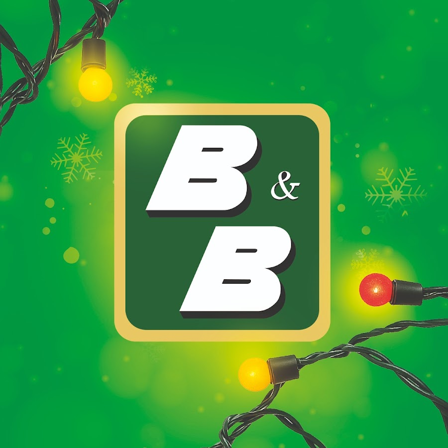

Jingle de B&B
El jingle de B&B se caracteriza por su dinamismo y tono alegre, diseñado para captar rápidamente la atención del consumidor. A diferencia de otros jingles más tradicionales, este busca generar una sensación inmediata de energía y cercanía.
La melodía utiliza ritmos marcados y frases cortas, lo que facilita la repetición mental del mensaje y refuerza la recordación de la marca en distintos contextos publicitarios.
Este jingle ha sido utilizado de forma constante en campañas televisivas y radiales, convirtiéndose en un elemento distintivo dentro de la identidad sonora de B&B.

Análisis del jingle
Tipo de producto
Producto de consumo masivo, dirigido a un público amplio, lo que requiere un mensaje claro y fácilmente identificable.
Estilo musical
Alegre, rítmico y dinámico, diseñado para transmitir energía y una imagen positiva de la marca.
Mensaje principal
Refuerza la idea de cercanía y accesibilidad, asociando la marca con experiencias cotidianas.
Importancia del jingle en productos de consumo
En productos de consumo masivo, el jingle cumple una función clave al diferenciar a la marca dentro de un mercado altamente competitivo. En el caso de B&B, la música publicitaria permite destacar el producto y hacerlo fácilmente reconocible.
El uso constante del mismo jingle a lo largo del tiempo contribuye a crear una identidad sonora sólida, logrando que el consumidor identifique la marca incluso sin apoyo visual.
Esta estrategia demuestra cómo la música publicitaria puede influir en la percepción del consumidor y fortalecer la fidelidad hacia la marca.